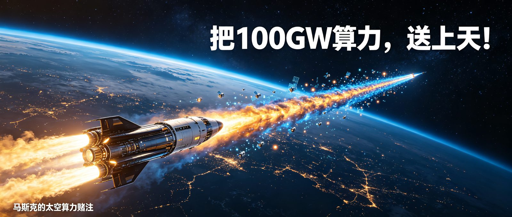
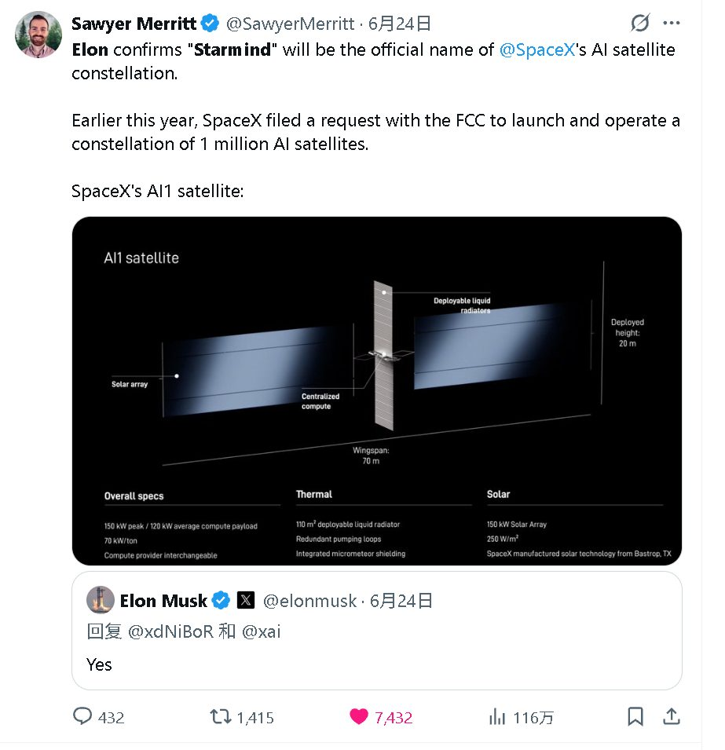
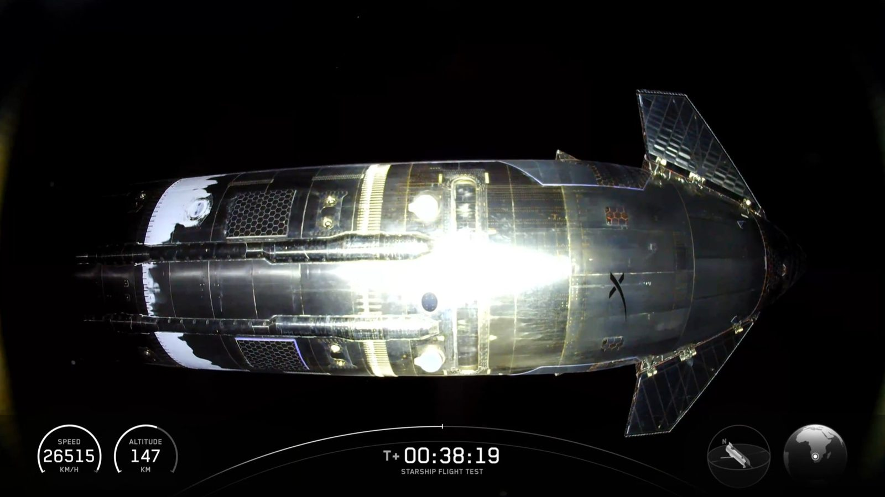

把等于全美国20%用电量的算力集群，发上太空！
这是马斯克新的疯狂计划。
在X平台网友的追问下，马斯克确认SpaceX AI卫星项目命名为Starmind。
Starmind 目标是每年发射100万吨卫星，新增100GW轨道算力。
注意，不是100吨，是100万吨！
同时100GW的功耗，约是亚马逊云计算2025年新增算力的26倍！
地面算力好建也好维护，为什么马斯克要大费周章，把巨量的算力往天上送？

Starmind不是马斯克心血来潮。
它的起点是一个越来越难回避的现实，AI正在被电力困住。
先看一组数据：
供需缺口显而易见。
发电厂和电网不是软件，扩容以10年为单位计。
而GPU集群几个月就能铺满一个园区。
今年1月达沃斯论坛上，马斯克把问题说得更直白：
电力是卡住AI脖子的根本。
他预测电力瓶颈可能在2026年内出现。
同台的贝莱德CEO Larry Fink补充了一句：电网扩容速度，"每年最多4%到5%。"
就算GPU芯片管够，没电运行，也和沙子没区别。
那为什么不亲自下场造电站？
其实马斯克也试过。
涡轮机的订单已经排到2030年了。
马斯克在2月访谈中亲口说，全世界只有三家铸造公司能造涡轮叶片，产能全被锁死。
还有一个被忽略的成本黑洞——冷却。
一台GB300机架标称140kW，但加上冷却（多耗40%）和备用冗余，实际需要接近翻倍的电力才能稳定运转。
地面数据中心：要征地说服政府、要排队等电网、要额外堆40%的冷却电耗、要等一台2030年以后才能交货的涡轮机。
太空则可以跳过这些限制因素。
100GW（吉瓦）是什么概念？
一台英伟达最先进的GB300服务器机架，峰值功耗约140kW。
100GW，相当于超过70万个GB300机架同时满载。
这大约是今天全球最大云厂商全部数据中心规模的1.5到2倍。
怎么算出来的？
每年发射一万次星舰，合计100万吨卫星。
每吨产生约100kW算力。
100万吨 × 100kW/吨 = 100GW/年。
不过这是远期目标。实现路径分了三个阶段：

愿景很美，但要把它变成真实运转的AI基建，至少要过五关。
猎鹰9号，当前发射成本约每公斤2,700美元。
SpaceX的目标是让星舰降到每公斤10到50美元。
这需要完全可重复使用 + 每年一万次发射频次。
马斯克估算：星舰复用后成本能降100倍，低于每磅100美元。
更反直觉的是——马斯克说不需要几千艘星舰，只需20到30艘就够了。关键是每艘能否在30小时内完成回收和再发射。瓶颈不在造多少艘，在复用速度。
星舰至今没有演示过快速复用，这第一步就非常困难。
太空不是数据中心机房。近地轨道充斥着高能粒子和宇宙射线。传统做法是使用"辐射加固"工艺，单片成本5,000到50,000美元。
SpaceX走了完全不同的路，自研D3芯片。
D3并不是追求最高性能，而是追求在轨长期稳定运行。
使用台积电商业工艺，靠软件和架构手段来对抗辐射。
数据存三份互相校验、内存加纠错码、发现错误就擦掉重写。
不是让芯片本身耐辐射，而是出错就自动纠正。
如果D3验证成功，意味着轨道计算不再需要昂贵的航天级芯片。
Starmind不是孤立运行的。推理结果需要通过某种方式下传。
SpaceX的答案是Starlink激光星间链路。
截至2024年初，Starlink的9000多颗卫星通过激光链路每天传输42PB数据。
每链路约100Gbps。
Starmind卫星将搭载相同的激光终端，推理结果通过Starlink网络毫秒级回传到地面用户。
在地面上，120kW的一台服务器机架需要冷水机组、冷却塔和风机矩阵。
在太空里不能靠对流，只能靠辐射。
别看太空冷，少了对流的高效散热，积热将是灾难问题。
这个量级远超目前任何在轨航天器。
国际空间站的散热系统设计功率也就在十几千瓦级别。
AI1的散热方案是110㎡可展开液冷散热器。
在海外技术论坛的讨论中，有工程师做了热辐射计算后认为余量"非常紧张"。
每颗AI1的太阳能阵列输出150kW。
为支撑百万颗卫星的太阳能需求，SpaceX将在德州建一座10GW太阳能板工厂。
这一系列的产能爬坡，放到别家公司，都是不可能的任务。
但马斯克对此很乐观，太空用的太阳能板其实比地面的更便宜。
不需要厚玻璃保护、不需要沉重框架防风防雨、太空没有天气。
按马斯克的说法，中国现成的太阳能电池板已经便宜到离谱（$0.25/瓦）。
送到太空成本还能再压。
SpaceX声势最大，但不是唯一的入局者。
轨道AI算力正在形成一个新赛道：
英伟达卖铲子（芯片），谷歌做研究验证，亚马逊选择守在地面。
| 玩家 | 方案 | 进度 | 独特优势 |
|---|---|---|---|
| SpaceX | Starmind + AI1卫星 + 自研D3芯片 | 2027年初发射原型机 | 全自研 |
| 英伟达 | Space-1 Vera Rubin模块 | 2026年3月GTC发布，IGX Thor已获辐射认证在轨运行 | GPU生态 |
| 谷歌 | Project Suncatcher（TPU卫星 + 自由空间光通信） | 2027年初与Planet Labs发射两颗原型 | TPU自研芯片 |
| 亚马逊 | 暂无轨道算力计划 | CEO Matt Garman公开表态"不经济" | 地面数据中心市占率第一 |
| 蓝色起源 | 远期设想：太空GW级数据中心 | 贝索斯认为"未来几十年"才会发生 | 重型火箭能力 |
这里面，只有SpaceX 决定 all in！
火箭是自己造的（星舰），卫星是自己设计的（基于Starlink V3），芯片是自研的（D3），太阳能板是自己产的（Gigasat），AI基模是自己的（xAI）。
这意味着，SpaceX要同时面对整条产业链上的众多堵点。
合在一起将是科幻级别的挑战。
任何一个环节失败，都会让计划落空，并伴随巨大的沉没成本。
但反过来说，如果赛道跑通，介时SpaceX筑起的技术壁垒将是高不可攀的。
马斯克的赌注，是基于他判断，AI基建的底层矛盾已经变了。
不是缺GPU，是缺电。
AI的增速和电网扩容之间的鸿沟，是所有AI公司绕不开的物理天花板。
Starmind的本质是，在AI需求爆炸的未来，太空可能成为突破电力瓶颈的最优方案。
如果芯片、运力、散热、通讯，堵点都被突破。
那未来，在地面排队等电网供电的算力中心们，将被一艘艘昼夜不停的星舰远远甩在身后。
你觉得这一次，马斯克的第一性原理，算对了么？
— END —